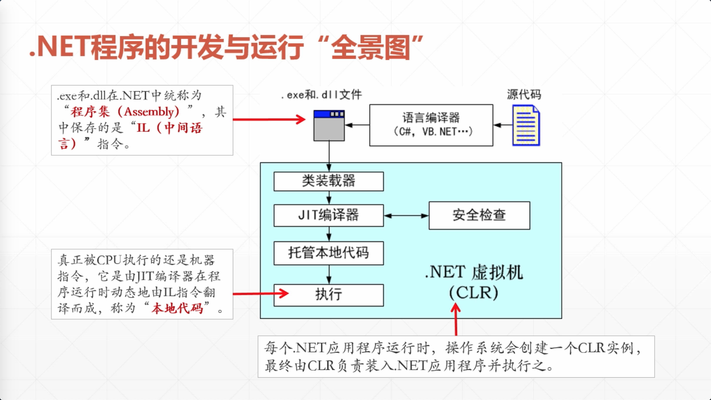

C#基本编程原则
程序是如何被计算机执行的
.NET运行原理
怎样构造求解问题的算法
一.大致了解C#基本编程规则 1.1 基本规则
“标识符(identifier:即程序中拥有特殊含义的单词)”区分大小写
每条语句以分号结尾，多条语句可以使用”{}”组合为一个语句块
编写的代码放在”类(class)”中，类是C#编程的基本单元
存放C#类的源代码文件其扩展名为”.cs”,一个”.cs”文件中可以存放多个C#类
1.2 Visual Studio中文件的组织方式:
“项目(Project)”是Visual Studio编译的最小单元
一个”解决方案(solution)”中可以有多个项目，显示为粗体的是启动项目
一个项目中可以有多个类文件。一个类只有被包括在一个项目中，才可以被Visual Studio编译
程序入口点是Program类中的Main()方法
1.3 为什么要学习面向对象程序设计
面向对象是一种主流的软件开发与设计方法
当前各种软件系统，基本都是应用面向对象思想与计算开发出来的
1.4 软件是如何编写的
面临问题
做出决策
如何设计与选中特定的算法处理信息
可以选择已有的算法，也可以设计新的算法
如何表达以方便计算机处理
设计和选用合适的数据结构
如何编写程序实现算法
选择合适的技术手段，设计合理的技术方案。软件系统价格，面向对象的分析与设计，编程语言，开发框架，软件平台…
1.5 需要掌握基础知识 程序如何被计算机执行–>各种信息是如何用0/1表达的–>计算机是由哪些元件组成，工作原理是什么–>操作系统如何启动一个程序的执行
二.程序是如何被计算机执行的 2.1 计算机能直接执行由0和1构成的机器指令 计算机中数值信息，直接用二进制”0”和”1”表达，非数值信息，采用”编码”的手段
“门”是这样的一种电路：它规定各个输入信号之间满足某种逻辑关系时，才有信号输出，通常有下列三种门电路：与门、或门、非门（反相器）。从逻辑关系看，门电路的输入端或输出端只有两种状态，无信号以“0”表示，有信号以“1”表示。
以”0”和”1”表达的指令，可以由计算机硬件直接执行，因此，将它们称为”机器指令”
不同体系结构的计算机硬件，能执行的机器指令是不一样的，每种机器能执行的所有机器指令，称为这种机器的”指令集” 2.2 计算机的大脑——CPU
CPU可以执行机器指令(“0”和”1”)
指令与数据通常保存在文件中
指令&数据->可执行程序文件(.exe)
Win平台下可执行文件通常以.exe结尾，另一种扩展名为.dll(动态链接库)需要被.exe装入后才能执行
2.3 外部存储器 & Memory(内存)与内存条
各种程序平常保存在外部存储器中
放在外部存储器中的程序并不能直接允许，需要被装入内存后，才能执行
内存存储数据—>分为指令,指令使用的数据
可执行程序.exe文件保存在外部存储器
⬇
在计算机上双击，系统读取文件，把它包容的指令和数据装载到内存
⬇
CPU直接存取放在内存存储单元的数据，并负责执行这些指令
2.4 区分两种不同的内存类型
物理内存
虚拟内存
C#写的.NET程序,无法直接访问物理内存上的特定数据单元,它所访问的上由操作系统负责提供的”虚拟内存”
2.5 程序开发与运行过程简述
软件工程师用各种编程语言写计算机程序
⬇
编译器把源程序转换为二进制指令与数据，以文件方式保存在外部存储器中
⬇
操作系统将程序文件从外部存储器读入到内存中
⬇
CPU从内存中取出指令执行
三.Dot Net运行原理 3.1 “编译”是怎么回事
纯文本形式的源代码
⬇提交
C#编译器编译源码
⬇生成
二进制形式的可执行程序文件(HelloWorld.exe)
1 2 3 4 5 6 7 8 9 10 11 12 using System;//表示将使用.Net基类库中的System命名空间 public class Program//类名Program { //程序入口点Main(数组[] 参数名) static void Main(string[] args) { Console.WriteLine("Hello,World"); } } //保存为ANSI格式(源代码标准格式) //helloworld.cs
1 2 3 4 csc helloworld.cs Microsoft (R) Visual C# Compiler version 3.5.0-beta4-20121-02 (00d6c926) Copyright (C) Microsoft Corporation. All rights reserved.
“编译(compile)”,粗略地说,它负责把人编写的源代码”翻译”为计算机可以识别并执行的二进制代码
3.2 可执行程序也是分类的
可执行程序也分很多类型，在Windows平台下，可分为
可执行程序
⬇
⬇
托管程序
非托管程序
例如:使用C#,VB.NET编写的可执行程序,运行时要求目标计算机上必须安装有.NET Framework
例如:使用C/C++编写的可执行程序,可以不需要安装额外软件，就能直接在操作系统中运行
3.3 “托管的”应用程序是什么意思 .NET应用程序是”托管(Managed)”的，意思是它必须在一个独立的运行环境(即CLR)中运行,并收到这个运行环境的管理与控制
.NET应用程序
⬆管理
.NET虚拟机(CLR)
⬇调用功能
操作系统(Windows)
⬇管理
构成计算机的各种硬件
3.4 .NET程序的开发与运行”全景图” 
四.怎样构造求解问题的算法 4.1 什么是”算法(algorithm)” 计算机中的算法 ,主要是指为了解决某个问题而设计的一种解决方案,包容一系列计算机能够执行的有着特定顺序的命令,计算机执行完这些命令，将得到某种结果,意味着某个问题已经有了一个结论
算法的针对性很强,专用于解决特定的问题独立于 特定的编程语言和软件平台的，这就是说:
可以使用多种编程语言,以多种方式，在不同的平台上实现同一个算法
4.2 从”结构化”到”面向对象”
程序是一个”黑盒”,程序=数据结构+算法
程序设计可以看成是一种”抽象”的艺术
4.2.1 数据结构————对数据进行抽象
先确定一种数据结构，如何基于此数据结构设计算法4.2.2 基于数据结构确定算法
将人的计算方法转换为计算机算法，每个算法用一个函数实现4.2.3 进一步细化与调整设计方案 4.2.4 最终的技术设计方案
“由粗略到详细”,”从上层到下层”地逐层设计4.2.5 确定开发顺序的基本方法
具体开发时,”从 下层 到 上层”地逐层开发，像盖楼一样
开发被别人调用，自己不用调用别人的函数
⬇
开发中间层函数，它需要调用底层已经实现好的函数
⬇
开发顶层函数，它需要调用中间层已经实现好的函数，通常情况下，避免跨层调用
点击展开结构化代码 1 2 3 4 5 6 7 8 9 namespace Lesson_02_Calculate_1_SP { public class MyDate { public int Year; public int Month; public int Day; } }
1 2 3 4 5 6 7 8 9 10 11 12 13 14 15 16 17 18 19 20 21 22 23 24 25 26 27 28 29 30 31 32 33 34 35 36 37 38 39 40 41 42 43 44 45 46 47 48 49 50 51 52 53 54 55 56 57 58 59 60 61 62 63 64 65 66 67 68 69 70 71 72 73 74 75 76 77 78 79 80 81 82 83 84 85 86 87 88 89 90 91 92 93 94 95 96 97 98 99 100 101 102 103 104 105 106 107 108 109 110 111 112 113 114 115 116 117 118 119 120 121 122 123 124 125 126 127 128 129 130 131 132 using System; namespace Lesson_02_Calculate_1_SP { internal class Program { static int[] months = {0, 31, 28, 31, 30, 31, 30, 31, 31, 30, 31, 30, 31}; public static void Main(string[] args) { MyDate d1 = new MyDate(); MyDate d2 = new MyDate(); //起始日期和结束日期 //1999年5月10日 d1.Year = 1999; d1.Month = 5; d1.Day = 10; //2006年3月8日 d2.Year = 2006; d2.Month = 3; d2.Day = 8; //计算结果 int days = CalculateDaysOfTwoDate(d1, d2); string str = "{0}年{1}月{2}日到{3}年{4}月{5}日共有天数："; str = String.Format(str, d1.Year, d1.Month, d1.Day, d2.Year, d2.Month, d2.Day); Console.WriteLine(str + days); //暂停,敲任意键结束 Console.ReadKey(); } //计算两个日期中的整天数 static int CalculateDaysOfTwoDate(MyDate beginDate, MyDate endDate) { int days = 0; days = CalculateDaysOfTwoYear(beginDate.Year, endDate.Year); if (beginDate.Year == endDate.Year) days += CalculateDaysOfTwoMonth(beginDate, endDate, true); else days += CalculateDaysOfTwoMonth(beginDate, endDate, false); return days; } //计算机两年之间整年天数，不足一年的去掉 static int CalculateDaysOfTwoYear(int beginYear, int endYear) { int days = 0; for (int i = beginYear + 1; i <= endYear - 1; i++) { if (IsLeapYear(i)) days += 366; else days += 365; } return days; } // 根据两个日期，计算机这两个日期之间的天数 static int CalculateDaysOfTwoMonth(MyDate beginDate, MyDate endDate, bool IsInOneYear) { int days = 0; //对于同一月，天数直接相减 if (beginDate.Month == endDate.Month) if (IsInOneYear) return endDate.Day - beginDate.Day; else if (IsLeapYear(beginDate.Year)) return 366 + (endDate.Day - beginDate.Day); else return 365 + (endDate.Day - beginDate.Day); //不同月 int i = 0; if (IsInOneYear) { //同一年 for (i = beginDate.Month; i <= endDate.Month; i++) { days += months[i]; //处理闰二月 if ((IsLeapYear(beginDate.Year) && (i == 2))) days += 1; } //减去月初到起始日的天数 days -= beginDate.Day; //减去结束日到月底的天数 days -= months[endDate.Month] - endDate.Day; } else { //不同年 //计算到年底的天数 for (i = beginDate.Month; i <= 12; i++) days += months[i]; //减去月初到起始日的天数 days -= beginDate.Day; //从年初到结束月的天数 for (i = 1; i <= endDate.Month; i++) days += months[i]; //减去结束日到月底的天数 days -= months[endDate.Month] - endDate.Day; } return days; } static bool IsLeapYear(int year) { //如果年能被400整除，是闰年 if (year % 400 == 0) { return true; } //能被4整除，但不能被100整除，是闰年 if (year % 4 == 0 && year % 100 != 0) { return true; } //其他情况，是平年 return false; } } }
4.3 转为面向对象实现
给函数搬一个家–类
重大变化:职责很明确 ,它负责”计算日期”,除此之外什么都不做公有(public) “方法
面向对象带来的好处:简单 “,所以”易用 “在必要时可以修改算法,外部调用者不会收到影响 ，其调用代码不需要改变
点击展开面向对象代码 1 2 3 4 5 6 7 8 9 namespace Lesson_02_Calculate_2_OO { public class MyDate { public int Year; public int Month; public int Day; } }
1 2 3 4 5 6 7 8 9 10 11 12 13 14 15 16 17 18 19 20 21 22 23 24 25 26 27 28 29 30 31 32 33 34 35 36 37 38 39 40 41 42 43 44 45 46 47 48 49 50 51 52 53 54 55 56 57 58 59 60 61 62 63 64 65 66 67 68 69 70 71 72 73 74 75 76 77 78 79 80 81 82 83 84 85 86 87 88 89 90 91 92 93 94 95 96 97 98 99 100 101 102 103 104 105 106 107 108 namespace Lesson_02_Calculate_2_OO { public class DateCalculate { private int[] months = {0, 31, 28, 31, 30, 31, 30, 31, 31, 30, 31, 30, 31}; // 计算两个日期中的整天数 public int CalculateDaysOfTwoDate(MyDate beginDate, MyDate endDate) { int days = 0; days = CalculateDaysOfTwoYear(beginDate.Year, endDate.Year); if (beginDate.Year == endDate.Year) days += CalculateDaysOfTwoMonth(beginDate, endDate, true); else days += CalculateDaysOfTwoMonth(beginDate, endDate, false); return days; } //计算机两年之间整年天数，不足一年的去掉 private int CalculateDaysOfTwoYear(int beginYear, int endYear) { int days = 0; for (int i = beginYear + 1; i <= endYear - 1; i++) { if (IsLeapYear(i)) days += 366; else days += 365; } return days; } // 根据两个日期，计算机这两个日期之间的天数 private int CalculateDaysOfTwoMonth(MyDate beginDate, MyDate endDate, bool IsInOneYear) { int days = 0; //对于同一月，天数直接相减 if (beginDate.Month == endDate.Month) if (IsInOneYear) return endDate.Day - beginDate.Day; else if (IsLeapYear(beginDate.Year)) return 366 + (endDate.Day - beginDate.Day); else return 365 + (endDate.Day - beginDate.Day); //不同月 int i = 0; if (IsInOneYear) { //同一年 for (i = beginDate.Month; i <= endDate.Month; i++) { days += months[i]; //处理闰二月 if ((IsLeapYear(beginDate.Year) && (i == 2))) days += 1; } //减去月初到起始日的天数 days -= beginDate.Day; //减去结束日到月底的天数 days -= months[endDate.Month] - endDate.Day; } else { //不同年 //计算到年底的天数 for (i = beginDate.Month; i <= 12; i++) days += months[i]; //减去月初到起始日的天数 days -= beginDate.Day; //从年初到结束月的天数 for (i = 1; i <= endDate.Month; i++) days += months[i]; //减去结束日到月底的天数 days -= months[endDate.Month] - endDate.Day; } return days; } private bool IsLeapYear(int year) { //如果年能被400整除，是闰年 if (year % 400 == 0) { return true; } //能被4整除，但不能被100整除，是闰年 if (year % 4 == 0 && year % 100 != 0) { return true; } //其他情况，是平年 return false; } } }
1 2 3 4 5 6 7 8 9 10 11 12 13 14 15 16 17 18 19 20 21 22 23 24 25 26 27 28 29 30 31 32 33 using System; namespace Lesson_02_Calculate_2_OO { public class Program { public static void Main(string[] args) { MyDate d1 = new MyDate(); MyDate d2 = new MyDate(); d1.Year = 1999; d1.Month = 5; d1.Day = 10; //2006年3月8日 d2.Year = 2006; d2.Month = 3; d2.Day = 8; //计算结果 string str = "{0}年{1}月{2}日到{3}年{4}月{5}日共有天数："; str = String.Format(str, d1.Year, d1.Month, d1.Day, d2.Year, d2.Month, d2.Day); DateCalculate obj = new DateCalculate(); int days = obj.CalculateDaysOfTwoDate(d1, d2); Console.WriteLine(str + days); //暂停,敲任意键结束 Console.ReadKey(); } } }
4.4 使用内置库实现
从如下事例中，可以看到，如果有一个功能强大的组家奴，基于这些组件开发应用程序，可以大大提升软件开发效率,因为可以重用别人的工作，不需要从头开始
即不要重复发明轮子，尽量重用别人的代码
点击展开内置库代码 1 2 3 4 5 6 7 8 9 10 11 12 13 14 15 16 17 using System; namespace Lesson_02_Calculate_3_BuiltIn_functions { internal class Program { public static void Main(string[] args) { DateTime d1=new DateTime(1999,5,10); DateTime d2=new DateTime(2006,3,8); double days = (d2 - d1).TotalDays; Console.WriteLine(days); } } }
五.变量、数据类型和表达式 5.1 什么是”变量”
程序运行所需要处理的数据，通常都要放到”变量(variable)”中
不同类型的”容器”,适合放置不同类型的数据,这种”类型”,称为”变量的数据类型 “
5.1.1 如何在C#中定义变量
语法格式:
示例int(整型) 变量，可以放整数 ，初始值为100 ,最后以”分号结束，C#语句结束不能省略分号”
5.1.2 变量存储与内存中
内存由多个内存单元构成，每个内存单元都有一个编号，称为”内存地址 “
给定一个”内存地址”，就能找到特定的内存单元
计算机可以从内存单元中写入或读出数据
使用比较底层的编程语言，如”汇编语言(Assembly Language) “,可以直接指定地址去存取特定的内存单元，但是由于硬件或系统不同，都可能需要修改程序，因此会低效
解决方案
这个内存区域的”名字”,结束所讲的”变量”
5.1.3 通过变量名”间接”地存取内存
变量的名字，可以看出是特定内存区域的”别名”,通过它计算机就能找到特定的内存单元存取数据
有了变量名，将不再需要显示指定一长串地址数值来访问内存单元了
5.1.4 什么是”给变量赋值” 变量定义好后，可以通过赋值语句给他传不同的值
给变量赋值，其实就是找到变量所代表的内存区域,把指定的数值写入其中
注意:写入到内存单元中的数据，都被转换为二进制 数值，计算机并不能直接处理十进制数
5.1.5 什么是变量间的相互赋值
变量间的相互赋值,本质上是内存单元间的值赋值
不同变量直接相互赋值，虽然值一样，但是变量却是相互独立的，不会因赋值而同步变化
5.2 C#语言数据类型
C#语言内置数据类型
编译时转变为CLR
CLR支持的基础数据类型
int
<—>
System.Int32
long
<—>
System.Int64
float
<—>
System.Single
Double
<—>
System.Double
点我展开示例代码
1 2 3 4 5 6 7 8 9 10 11 12 13 14 15 16 17 18 19 20 21 22 23 24 25 26 27 28 29 30 31 32 33 34 35 36 37 38 39 40 41 42 43 44 45 46 47 48 49 50 51 52 53 54 55 56 57 58 59 60 61 62 63 64 65 66 67 68 69 70 71 72 73 74 75 76 77 78 79 80 81 82 83 84 85 86 87 88 89 90 91 92 93 94 95 96 97 98 99 100 101 102 103 104 105 106 107 108 109 110 111 112 113 114 115 116 117 118 119 120 121 122 123 namespace Lesson_03_Type_Of_Data { internal class Program { public static void Main(string[] args) { DefineVariable(); StringOrstring(); UseVarKeyWord(); PrintDataTypeLength(); Console.ReadKey(); } #region "变量与数据类型" /// <summary> /// 变量的定义与变量的类型 /// </summary> static void DefineVariable() { int intValue = 100; long longValue = 100l; double doubleValue = 100.5d; float floatValue = 100.5f; Console.WriteLine(intValue.GetType()); Console.WriteLine(longValue.GetType()); Console.WriteLine(doubleValue.GetType()); Console.WriteLine(floatValue.GetType()); Console.WriteLine(intValue.GetType() == typeof(int)); } static void StringOrstring() { String str1 = "Hello"; string str2 = "World"; Console.WriteLine(str1.GetType()); Console.WriteLine(str2.GetType()); Console.WriteLine(typeof(String) == typeof(string)); } /// <summary> ///隐式类型变量定义 /// </summary> static void UseVarKeyWord() { var value = 100; Console.WriteLine(value.GetType()); var value2 = "Hello"; Console.WriteLine(value2.GetType()); // Dictionary<String,List<int>> dic = new Dictionary<string, List<int>>(); var dic = new Dictionary<string, List<int>>(); } /// <summary> ///了解特定数据类型变量所占内存单元的多少 /// </summary> static void PrintDataTypeLength() { Console.WriteLine("int类型占用" + sizeof(int)); //4 Console.WriteLine("long类型占用" + sizeof(long)); //8 Console.WriteLine("float类型占用" + sizeof(float)); //4 Console.WriteLine("double类型占用" + sizeof(double)); //8 } /// <summary> ///数值类型直接的状态转换 /// </summary> static void NumberTypeConvert() { int intValue = 100; long longValue = 100l; double doubleValue = 100.5d; float floatValue = 100.5f; longValue = intValue; doubleValue = intValue; doubleValue = floatValue; intValue = (int) longValue; intValue = (int) doubleValue; floatValue = (float) doubleValue; floatValue = intValue; intValue = (int) floatValue; } /// <summary> ///字符串与数值类型间的转换 /// </summary> static void StringAndNumberType() { string strValue = "100"; //字符串转换为数值 //方法一: int intValue = int.Parse(strValue); double doubleValue = double.Parse(strValue); //方法二: intValue = Convert.ToInt32(strValue); doubleValue = Convert.ToDouble(strValue); //数值转换为字符串 //方法一: strValue = intValue.ToString(); strValue = doubleValue.ToString(); strValue = 200.ToString(); //方法二: strValue = intValue + ""; } #endregion } }
5.2.1 从内存模型角度，C#变量可分为以下两种类型
C#数据类型
值类型
int
值类型变量存活与"线程堆栈"中
double
...
引用类型
string
引用类型所引用的对象，生存与"堆"中
...
5.3 运算符与表达式 1 2 3 4 5 6 7 8 9 10 11 12 13 14 15 16 17 18 19 20 21 22 23 24 25 26 27 28 29 30 31 32 33 34 35 36 37 38 39 40 41 42 namespace Lesson_04_Operators_and_expressions { internal class Program { public static void Main(string[] args) { UseOperator(); UseExpression(); } #region "运算符与表达式" ///<summary> ///使用运算符 /// </summary> static void UseOperator() { //+-*/,() double result = ((5 + 3) * 2 - 7) / 6d; Console.WriteLine(result); int value = 9 % 4; Console.WriteLine(value); int index = 1; //index++ <==> index=index+1 Console.WriteLine(index++); Console.WriteLine(++index); } ///<summary> ///使用表达式 /// </summary> static void UseExpression() { int value = 100; Console.WriteLine(value*2); } #endregion } }
5.4 选择结构与逻辑表达式
顺序执行
按条件选择一条分支执行
<====>
选择结构
在特定场景中反复执行特定语句
<====>
循环结构
逻辑表达式通常用于表示某种条件是否得到满足
当程序运行时,计算机解析逻辑表达式，会得到一个值,在C#中，这个值只有”true”或”false”
在if语句中,基于逻辑表达式执行的结构执行特定的分支
运算符
说明
>
大于
<
小于
==
等于
>=
大于等于
<=
小于等于
!=
不等于
注意:=>不是”等于大于”，而是Lambda表达式